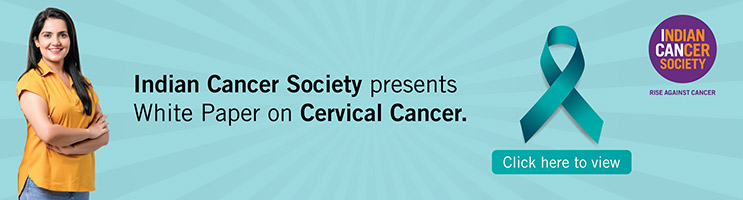

ICS’s Cancer Registry is the 1st registry in India and 2nd in Asia covering the entire population of greater Mumbai. It was established in 1963, followed by Pune (1972), Aurangabad (1978) and Nagpur (1980). The aim of the registry is to obtain reliable cancer related incidence data from a defined urban population. The Registry studies the pattern of diseases in the population and documents habits, behavior patterns and the environmental background that could impact the onset of cancer. The goal is to identify factors leading to a better understanding of cancer, which then leads to improved prevention, screening and early diagnostic strategies. The registry has contributed significantly in providing information for planning, implementing and monitoring cancer control inputs and evaluating cancer control outcomes. The registry data is useful for projecting the magnitude, pattern and trends of cancer incidence in India. The Registry has published more than 100 research articles in international and national journals and 60 monographs on cancer incidence and mortality, survival and trends.
Indian Journal of Cancer : The Indian Journal of Cancer, the first indexed oncology journal from India, was established in 1963 and is serving the needs of all the specialties of oncology. Mumbai Cancer Registry, Greater Mumbai : The Mumbai cancer registry was established in June 1963 as a Unit of Indian Cancer Society with the aim of obtaining reliable incidence and mortality on cancer from a precisely defined urban population. Mumbai is the first population based cancer registry to be established in India, the second in Asia which covers 603 sq. km. area of greater Mumbai. The information given by the registry is useful in identifying factors in the community which lead to a better understanding of cancer, and can be translated into improved prevention, screening and early diagnostic strategies. Satellite Cancer Registry : The first satellite registry was established in 1972 at Pune, the second at Aurangabad in 1978 and third at Nagpur in 1980.

ICS relaunched the CK Handoo Scholarship on World Cancer Day in February 2023 by broadening the scope and criteria. The corpus represents a donation by Mrs. Manorajana Kaul in 1969 in memory of her late mother Mrs. Chandra Kumari Handoo; the interest derived out of the corpus is used for the grant to grant fellowship award to students doing research in field of Cancer. Aim - "To provide grants for study and research in cancer – its control, treatment and care."